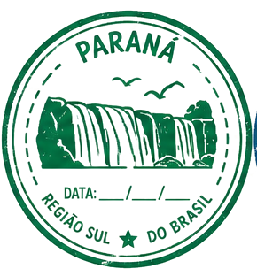
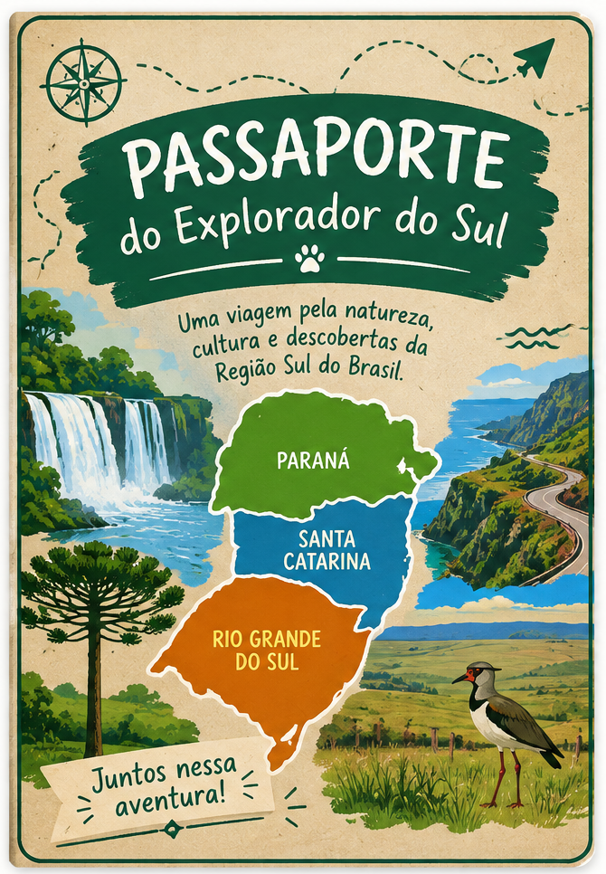
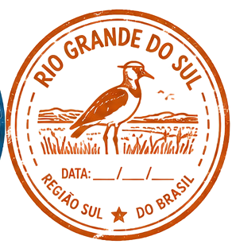
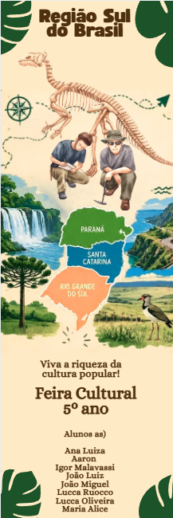

ParanáQuedas d’água e araucárias
UMA JORNADA PELO SUL DO BRASIL
Prepare-se para explorar paisagens, histórias, ciência e curiosidades do Paraná, de Santa Catarina e do Rio Grande do Sul. Cada resposta é um novo destino!
Preparando seu passaporte...

SUA PRÓXIMA DESCOBERTA COMEÇA AQUI


REGISTRO DE DESCOBERTA
Escolha uma alternativa para continuar sua jornada:
EXPEDIÇÃO CONCLUÍDA
PRÊMIO DESBLOQUEADO
Você acertou todas as perguntas desta expedição!
Solicite seu prêmio na estação!
